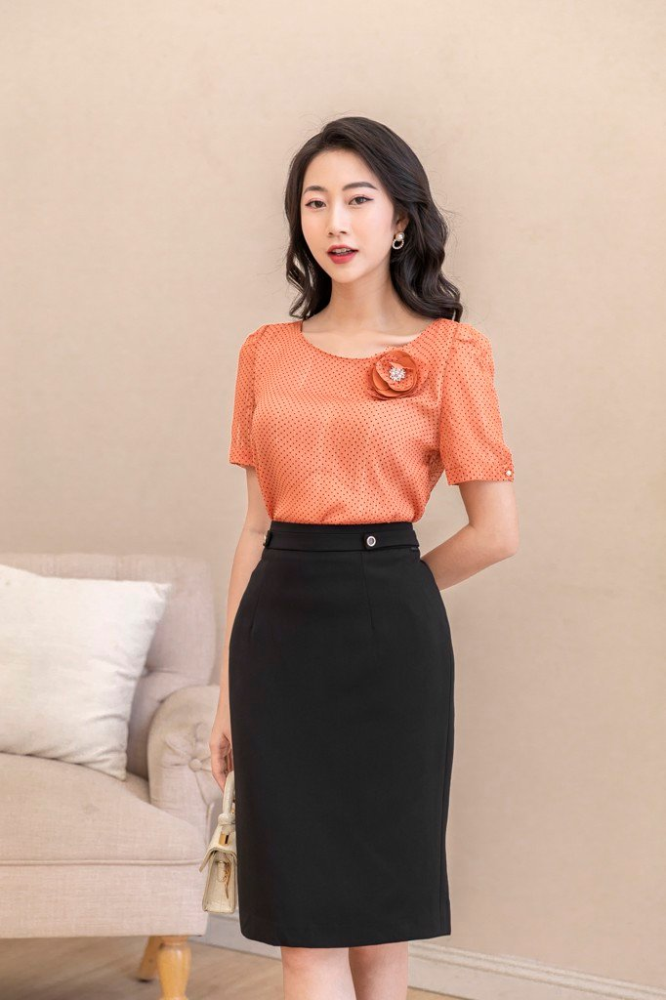
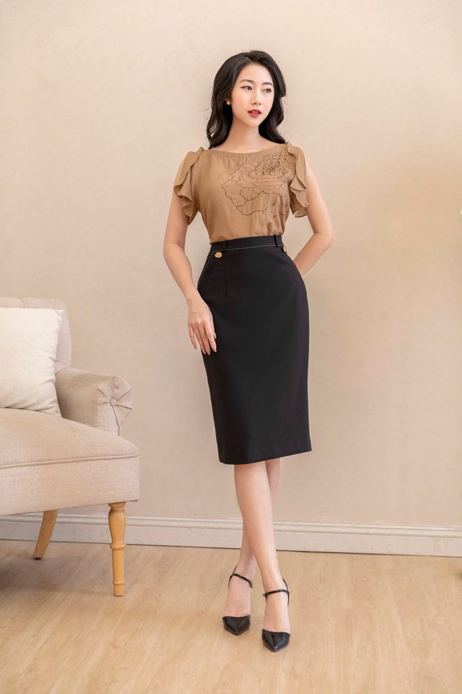
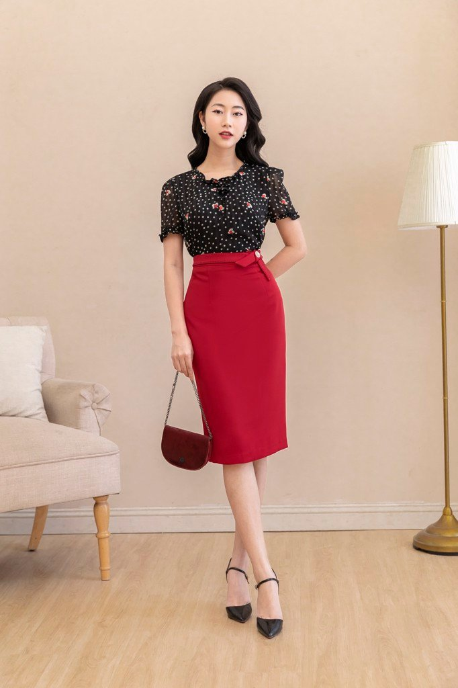
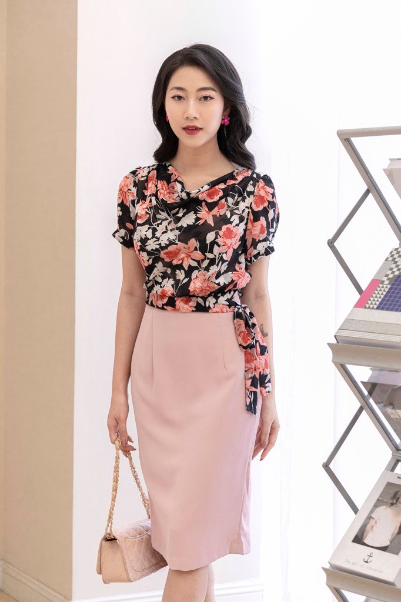
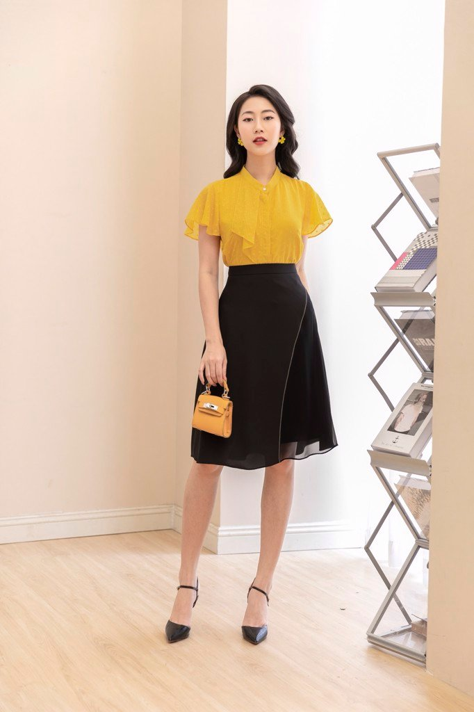
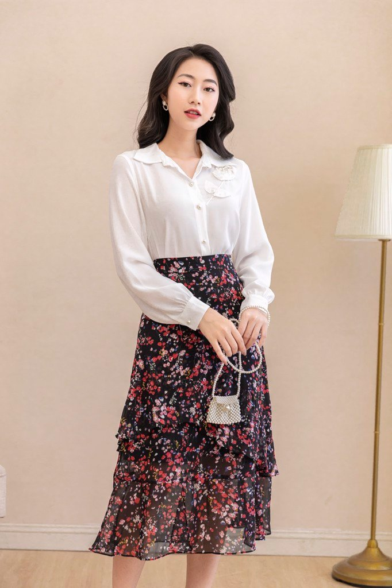
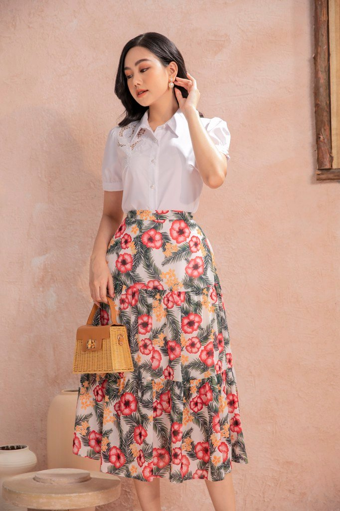
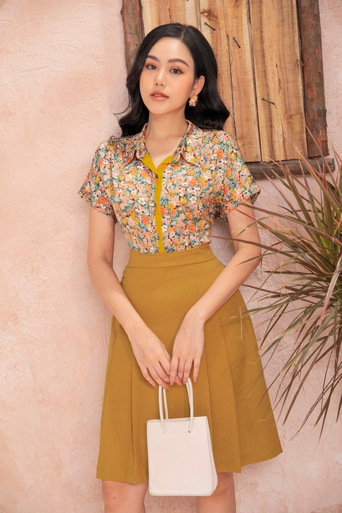
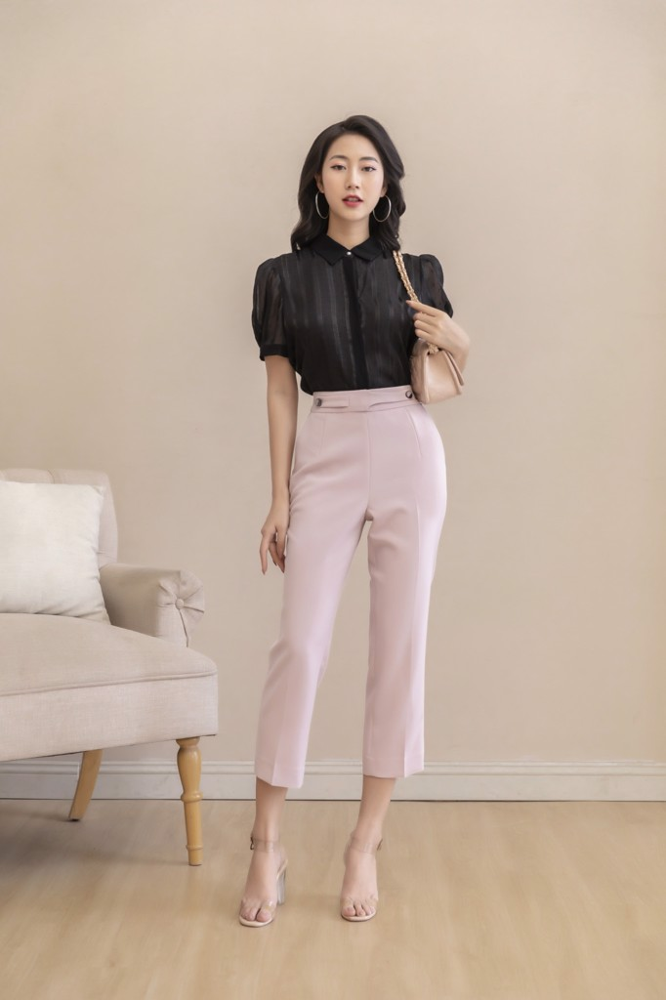
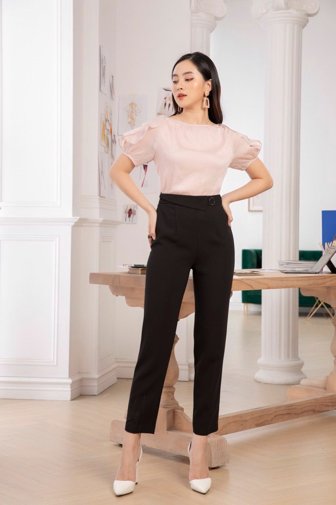

Hoàng Khang
Hoàng KhangGỢI Ý MIX & MATCH TRANG PHỤC CÔNG SỞ CHO QUÝ CÔ THANH LỊCH
24/09/2021
Đối với những quý cô công sở, phong cách thời trang là 1 trong những yếu tố có thể quyết đinh sự thành công trong công việc. Thời trang công sở hiện nay không còn gò bó trong khuôn khổ truyền thống nữa mà thay vào đó là sự đa dạng và biến hóa hơn theo dòng chảy của thời trang. Bên cạnh những bộ đầm liền , áo sơ mi và chân váy với kiểu dáng và màu sắc phong phú cũng được ưu tiên lựa chọn bởi tính tiện dụng và các chị em có thể thỏa sức sáng tạo để làm mới mình.
Cùng NEM khám phá những công thức kết hợp các loại trang phục công sở thanh lịch và hiện đại bạn nhé!
-
1. Áo sơ mi/ áo phông kết hợp cùng chân váy bút chì:
Tủ đồ của các quý cô công sở không thể thiếu được chân váy bút chì. Với muôn vàn màu sắc và kiểu dáng khác nhau, sẽ không có giới hạn cho khả năng mix & match cùng item này. Thiết kế ôm sát và chiều dài qua gối sẽ tôn lên trọn vẹn đường cong quyến rũ của các quý cô đồng thời che đi nhược điểm cơ thể hiệu quả. Những biểu tượng của phong cách thanh lịch, chuyên nghiệp như công nương Kate, Carine Roitfeld – cựu Tổng biên tập Vogue Paris,.. đều lựa chọn áo sơ mi phối hợp váy bút chì thay cho thông điệp phong cách cá nhân.Dưới đây, NEM sẽ gợi ý cho bạn những mẫu chân váy bút chì không thể bỏ lỡ.
Đầu tiên, không thể không nhắc tới mẫu chân váy trơn với tone màu trung tính "bát biến theo thời gian", nàng có thể chọn lựa bất kì chiếc áo nào cũng có thể tạo nên set đồ thanh lịch và hiện đại. Các chị em đừng ngần ngại chọn lựa những chiếc áo sơ mi với tone màu nổi hay thiết kế cách điệu như bèo nhún,đính hoa 3D, hoa thêu,...
Chân váy đen chắc chắn đã rất quen thuộc và gắn bó với các quý cô công sở. Thông thường ở chốn văn phòng, chân váy đen thường có chiều dài trên gối để đảm bảo được sự chỉn chủ và lịch sự. Điểm công của item này chính là sự dễ dàng khi phối đồ, bạn chỉ cần mix với chiếc áo bất kì mà không cần đắn đo chọn lựa món đồ thời trang kết hợp cùng nữa. Các chị em đừng ngần ngại mặc những chiếc áo sơ mi với tone màu nổi hay thiết kế cách điệu như bèo nhún,đính hoa 3D, hoa thêu,... để trở nên cuốn hút hơn nhé.

Chân váy bút chì màu sắc nổi bật đem tới sự đa dạng trong phong cách thời trang: nữ tính dịu dàng với tone màu hồng, trẻ trung với sắc đỏ, hồng và thanh lịch với tone màu trắng.

Chân váy bút chì màu sắc nổi bật đem tới sự đa dạng trong phong cách thời trang: nữ tính dịu dàng với tone màu hồng, trẻ trung với sắc đỏ, hồng và thanh lịch với tone màu trắng.
 -
2. Áo sơ mi/áo phông kết hợp cùng chân váy midi:
Chân váy midi với thiết kế dáng chữ A và độ dài qua gối có thể dễ dàng kết hợp cùng các items khác tạo ra phong cách đa dạng và che mọi khuyết điểm của đôi chân. Có thể nói chân váy dáng A là món đồ cực kỳ "dễ tính" vì phù hợp với mọi dáng người. Bạn chỉ cần lựa chọn chiếc áo sơ mi hay áo phông có màu sắc tương đồng để có được set đồ thanh lịch, nữ tính. Chắc hẳn chân váy màu đen sẽ là món đồ không thể thiếu trong tủ đồ của mọi quý cô bởi tính an toàn và ứng dụng cao của màu sắc này. Bạn có thể kết hợp cùng áo màu sắc nổi bật như vàng, đỏ, cam hoặc chiếc áo hoa rực rỡ.
Để giữ được sự nữ tính, thướt tha của quý cô công sở, dáng váy này nên được kết hợp cùng item có nét tương đồng về chất liệu vải. Nếu bạn kết hợp áo sơ mi voan mềm rủ kết hợp cùng chân váy dáng A với chất liệu dày cứng sẽ khiến tổng thể bộ trang phục trở nne cứng nhắc và tạo cảm giác khó chịu, bí bách cho người mặc Bạn muốn trông thật nổi bật và cuốn hút khi tới công sở? chân váy midi họa tiết hoa nhí sẽ là lựa chọn tuyệt vời. Item này vừa giữ được sự thanh lịch cần có khi đi làm nhưng vẫn giúp bạn trở thành tâm điểm. Tip khi sử dụng món đồ này là bạn chỉ nên phối cùng áo trơn màu, có thể là áo màu trắng/đen hoặc màu sắc tương đồng, tránh chọn những gam màu đối lập hay họa tiết sẽ gây rối mắt cho tổng thể.
  Khi bạn đã cảm thấy nhàm chán với những công thức mix đồ an toàn, đừng ngần ngại thử set đồ màu sắc mới NEM gợi ý dưới đây nhé.
 -
3. Áo sơ mi/ áo phông kết hợp cùng quần tây
Món đồ cơ bản nhât trong tủ đồ của các cô nàng công sở nhưng chưa bao giờ gây nhàm chán chính là quần tây. Dù style của bạn có đa dạng phá cách đến đâu cũng không thể bỏ qua bởi tính thanh lịch và thời thượng của item này. Khi nhắc tới quần công sở, nhiều quý cô sẽ liên tưởng tới những set đồ "đóng hộp" và có phần đứng tuổi. Tuy nhiên nếu khéo léo lựa chọn, những mẫu quần có thiết kế tinh tế và phù hợp sẽ tôn lên vóc dáng của các chị em và mang tới sự chuyên nghiệp, thanh lịch và hiện đại.
Không riêng gì các quý cô công sở mà các chị em ngành nghề khác ai cũng cần có vài chiếc quần tây trong tủ đồ bởi item này bởi vừa tôn dáng, lịch sự lại cứu cánh trong những ngày "không biết mặc gì". Nếu đã nhàm chán với quần đen, bạn hãy thử sang những tone màu khác lạ mắt hơn nhé. Đầu tiên, không thể không nhắc tới quần ống đứng.Kiểu quần với phom dáng vừa vặn này sẽ đem đến cho chị em sự chỉn chu và gọn gàng cần thiết ở nơi công sở. Tuy nhiên với mẫu quần này, chị em nên chọn phiên bản có độ dài trên mắt các chân để giữ được vóc dáng cao ráo và tránh gây cứng nhắc cho set đồ. Ngoài cách phối cùng áo sơ mi cơ bản, item này còn có thể kết hợp cùng áo phông và giày mules hoặc slip on để tạo nên tổng thể trẻ trung, sành điệu hơn.
 Với những gợi ý này, NEM hy vọng các chị em sẽ không còn mất nhiều thời gian mỗi sáng với câu hỏi " Hôm nay mặc gì?". Việc tự mix & match cho bản thân set đồ thanh lịch, phù hợp với môi trường làm việc và mới mẻ để F5 bản thân sẽ trở nên dễ dàng hơn. Đừng bỏ lỡ cơ hội sở hữu bộ cánh bạn yêu thích với mức giá ưu đãi chỉ bằng vài thao tác đơn giản bạn nhé!
Inbox cho NEM ngay để được tư vấn bạn nhé!
TIN NỔI BẬT

TỰ TIN KHOE DÁNG VỚI ĐẦM SUÔNG

ĐIỂM DANH 3 MẪU ÁO KHOÁC "MUST - HAVE" MÙA THU ĐÔNG 2021

GỢI Ý MIX & MATCH TRANG PHỤC CÔNG SỞ CHO QUÝ CÔ THANH LỊCH